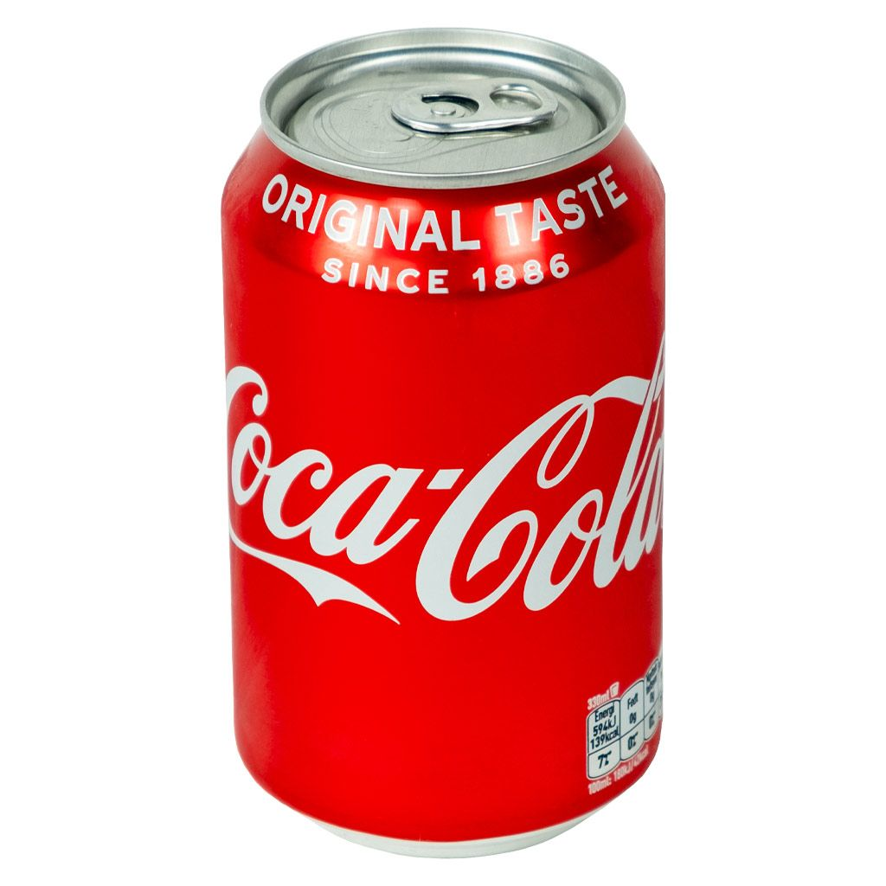

<script>
    var leeftijd = confirm("ben je ouder dan 18?");
    if(leeftijd == true) {
        document.write(' proost');
    } else {
        document.write(' je mag nog geen bier');
    }
</script>

